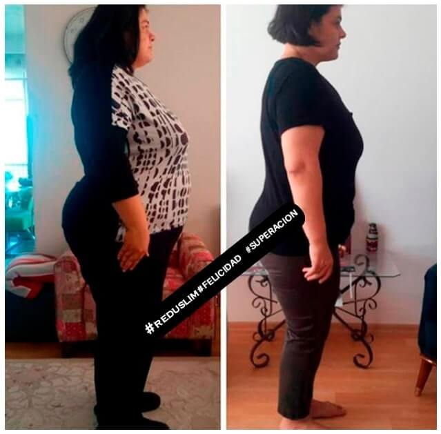

Camila Dávila, una veterinaria de 34 años, pesaba 105 kg, pero nunca se preocupó mucho por la báscula. Solo vio que era necesario adelgazar cuando su obesidad empezó a perturbar su matrimonio. Luego nos cuenta cómo lo consiguió:
Mis problemas con la báscula empezaron cuando me mudé al extranjero, a los 17 años. Gané muchos kilos y desde entonces, he estado en el famoso efecto acordeón. Pero nunca tuve ningún problema porque tenía sobrepeso, al menos hasta entonces.
Sin embargo, ya en España, me casé y tuve a mi hijo, engordé aún más y no pude volver al peso que tenía antes, mi esposo estaba incómodo, me pidió que intentara adelgazar de una forma amable, incluso.
Cuando queremos adelgazar, miramos en todas partes y hacemos muchas dietas que se encuentran en Internet, sin embargo, en el 99% de los casos es una pérdida de tiempo y de dinero.
¿Lo que hice para perder 28 kg en solo 2 meses?
SIMPLEMENTE seguí un consejo de mi hermana que vive en los EE. UU. en el estado de Massachusetts. Ella dijo que allí hay un producto aprobado por la universidad local (Universidad de Harvard) y que está revolucionando el adelgazamiento de una manera saludable y sin ese efecto de acordeón no deseado.

Así que empecé a investigar y me sentí esperanzada cuando vi que, después de largas
pruebas de eficacia, la FDA en los EE. UU. había aprobado este producto y que ya
había mucha gente usándolo. Vi en las redes sociales resultados extraordinarios de
personas que eliminaron 14 kilos en un mes.
Entré directamente en el sitio web oficial del , elegí un tratamiento de 3 unidades para probar y ya en la segunda semana había perdido 4cm de cintura, estuve muy feliz y realicé nuevamente un pedido, esta ves de 6 unidades del .
Cuando había llegado al tercer embalaje, yo estaba 7 kg más delgada y
ya estaba usando talla 42.
Seguí siendo constante, tomando 2 cápsula
diaria 30 minutos antes de las comidas y teniendo una alimentación un poco más controlada
gracias a la acción del llegué al final del tratamiento.
Imagen de archivo personal de Camila
Mi marido se sorprendió con el resultado que obtuve en tan poco tiempo. Perdí 28 kilos de pura grasa, logré controlar mi voluntad por los dulces, tuve más energía para hacer ejercicios y mantener una vida saludable. Hoy estoy usando ropa de talla 38, estoy muy feliz de poder ir a comprar ropa en la tienda y pedir 38, es una satisfacción enorme que solo nosotras las mujeres conseguimos entender.
Mi matrimonio está de vuelta en marcha, mi marido esta muy feliz y siempre me esta elogiando.
Mis piernas disminuyeron significativamente las celulitis, están más lisas, mi piel mejoró, aquella grasa en el medio de los muslos desapareció, mis brazos están más duritos.
En fin, al principio me puse desconfiada y pensé que sería un producto más de los que la gente crea solo para ganar dinero, pero cuando vi todos los resultados hasta de actrices de Hollywood, entonces volví a confiar y no necesito decir que funciona, pues mí antes y mi después hablan por sí solos.
Hemos estado investigando qué tiene de especial el y por qué hace que adelgaces tan rápido
Después de 3 años de investigación científica y extraordinario éxito en Estados Unidos, donde llevó a más de 170 mil personas a adelgazar en tiempo récord, el laboratorio de renombre trae su fórmula a Europa y conquista a muchos seguidores del compuesto.
tiene el poder de inhibir el apetito mediante la disminución de la compulsiva voluntad de comer, incluyendo dulces, trabaja en la absorción de grasa de los alimentos, ayuda el metabolismo a reducir grasas mejor que los métodos convencionales, proporcionando una pérdida de peso y medidas.

La fórmula especial del actúa en el organismo con efecto similar a tratamientos de alto costo. Cuando las fibras entran en contacto con el agua se crea una especie de gel estomacal, generando saciedad, inhibiendo el hambre y el apetito. Un envase contiene 10 cápsulas y su método de uso es una cápsula diaria 30 minutos antes de cenar. Incluye poderosos componentes naturales entre ellos:
Extracto de hojas secas de Mate, Extracto de naranja amarga biche: Reduce el apetito. Aumenta la degradación de grasas. Ayuda a perder peso.
Raíz de Glucomanano Konjac en polvo: Mejora el funcionamiento cardíaco. Normaliza el metabolismo. Influye positivamente sobre el cuerpo.
Acetil-L-Carnitina: Elimina los líquidos del cuerpo. Limpia y fortalece el sistema digestivo, mejorando su funcionamiento.
Extracto de tallos y hojas de Gymnema: Aumenta la cantidad de endorfinas y proporciona recarga de energía, reduce la dependencia de los dulces.
Es como si una vejiga se llena de agua, en esta, no habrá espacio para el aire. Y si llenas tu estómago con un gel, en este no habrá espacio para comer. ¡Y el resultado de eso ya lo sabes bien: pérdida de peso!
Con
es posible:
✅ AYUDAR AL METABOLISMO (LIPÓLISIS)
✅ REDUCIR 4KG DE GRASA EN CUATRO SEMANAS
✅ INHIBIR EL APETITO
✅ REGULAR EL INTESTINO
✅ REDUCIR LOS NIVELES DE COLESTEROL
✅ REDUCCIÓN CONSIDERABLE DE LA CELULITIS
✅ REDUCCIÓN DE LA HINCHAZÓN DEL CUERPO
✅ DESINTOXICAR EL ORGANISMO
La fórmula avanzada del ayuda a reducir la flacidez y la celulitis
“Los resultados pueden variar”
es un producto saludable, ha ayudado a las mujeres a perder peso y reducir las celulitis.
“Los resultados pueden variar”
¿Imagina poder volver a usar esos jeans viejos que ya no te quedan bien, o poder comprar una talla más pequeña?
“Los resultados pueden variar”
¿Te imaginas adelgazar hasta 3,5 kg en la primera semana de uso del compuesto, y las personas cercanas a ti como tu pareja y amigos te elogien diciéndote lo guapo(a) que eres, hablando de cuánto has adelgazado e incluso preguntándote qué has hecho para ADELGAZAR tan rápido?
¡Y lo que descubrimos fue impactante! El pasó una prueba rigurosa y, por primera vez, un producto alcanzó la marca de 5 estrellas en nuestra evaluación. Veamos los resultados:
Pruebas Realizadas:
★ ★ ★ ★ ★
PUNTOS DESTACADOS
- No causa las famosas "Diarreas de Grasa";
- Los beneficios han sido probados científicamente;
- Aumenta la reducción de grasa con termogénicos naturales;
- Estimula la reducción del colesterol, reduce los niveles de glucosa y desencadena expresiva pérdida de peso
- ¡El 97% de los clientes que hicieron uso informarón estar SATISFECHOS con los resultados!
eficacia probada junto a FDA
Todos sabemos que para que cualquier producto pueda ser vendido, necesita ser
sometido a las pruebas de las organizaciones de vigilancia de Salud, Departamento de
Salud, FDA, etc.
es un producto con fórmula importada de EE.UU. Y para poder actuar en EU.,
la empresa responsable del producto tuvo que someterse nuevamente a una prueba de
eficacia, aunque ya actuaba en otros países. Y después de varias pruebas, la FDA
constató su eficacia, homologando y autorizando su producción y venta, por tratarse
de un producto seguro y que cumple lo que promete.
Hablamos con uno de los responsables de la fórmula y el éxito del
Nuestra redacción se puso en contacto con el laboratorio fabricante para entender a fondo lo que hay detrás del misterio del y conseguimos una rápida entrevista con uno de los responsables del desarrollo y respondió algunas preguntas.
Redacción: ¿El funciona para los hombres?
Sí, la fórmula fue desarrollada para cualquier género, ocurre que las mujeres buscan más ese tipo de compuesto por tener un metabolismo un poco más lento que los hombres, en general.
Redacción: ¿Quién tiene presión alta puede tomar?
Sí, es un compuesto saludable y sin contraindicaciones, excepto en el caso de embarazadas y lactantes.
Redacción: ¿Se requiere receta médica para su uso?
No, ya que es un suplemento alimenticio, totalmente legalizado por la FDA y cualquier persona puede adquirir a través del sitio web oficial.
Cientos de lectores nos han enviado correos electrónicos mostrando sus resultados con el producto. Hicimos una prueba con una voluntaria, y mira el resultado del antes y después, mostrando que el realmente funciona:
Pruebas voluntarias:
Después de leer varios relatos y también conocer de cerca a mujeres que tuvieron la vida transformada a través del , Patricia Fernandez, se dispuso a investigar más a fondo ese suplemento que está causando alboroto entre las famosas.
Así, se puso en contacto con el fabricante del y, con la ayuda del equipo de producción, publicó los resultados de la prueba de primera mano:
Para la prueba, Patricia utilizó durante 60 días el . Los resultados fueron impresionantes. Vea:
Primeros Días:
Después de esperar 3 días para la entrega del producto en mi casa, ya en los primeros días tomando , me quedé intrigada con los resultados. Mi nivel de energía estaba arriba, y ya no tenía tanta compulsión por comer.
Descubrí un efecto adicional del , y es su poder para disminuir el apetito por dulces y estabilizar la compulsión alimentaria. Yo ya me sentía muy bien y creo que continuaría tomando sólo por la energía extra que él me dio. Lo más sorprendente es que no había cambiado nada de mi rutina diaria, no estaba haciendo ejercicio y comía todo lo que quería.
En el séptimo día, fui a comprobar mis medidas y no pude creer lo que vi. ¡Ya había disminuido 2 tallas! Durante mucho tiempo había intentado diversas formas de adelgazar y ninguna me había dado tantos resultados, en tan pocos días.
Después de 21 días:
Después de 21 días de tomar el , me sentía con la misma energía que tenía hace 10 años, y estaba teniendo las mejores noches de sueño en años.
Ya no me despertaba cansada por la mañana y podía descansar. El laboratorio reveló que esto sucede cuando el cuerpo elimina las toxinas y reduce glucosa y colesterol.
Además, logré perder más peso y muchas medidas en mi cuerpo consiguiendo entrar en algunos pantalones vaqueros y blusitas que no podía usar desde hace mucho tiempo.
Nunca había tenido resultados tan rápidos en mi vida, ni siquiera con medicamentos controlados. Lo había intentado todo, pero...
A partir de ese punto, comprobé que el si funcionaba realmente.
Después de 30 días: Después de 30 días tomando , cambie de talla 48 a 44. Quedó claro el por qué de tanto alboroto de las redes sociales en las últimas semanas.
¡Decidí probar más ropa muy antigua que aún guardaba y me di cuenta de que había recuperado todo mi vestuario!
Parecía un sueño, pero estaba frente a mi espejo!
Después de 60 dias:
Después de 2 meses tomando todos los días, puedo decir que mis resultados fueron impresionantes.
En 2 meses perdí 28 kilos de pura grasa (atención aquí: muchas dietas te hacen perder líquidos y masa muscular, lo que te causa el temido "efecto acordeón").Mi pérdida de peso fue grande y de grasa, lo que dio lugar a una drástica disminución del tamaño de mi ropa sin celulitis. ¡He reducido radicalmente los números de mi talla y me puse toda la ropa que quería!
Me dejé llevar por los maravillosos resultados y seguí usando el . Hoy, hace casi 5 meses que uso el , mi foto revela cuánto he conseguido adelgazar, en total, 28 kilos de pura grasa. Estoy muy feliz con los resultados alcanzados, creo que muchas mujeres también son iguales a mí, pues el compuesto funciona y este es el secreto de su gran éxito

“Los resultados pueden variar”Después de terminar el experimento, me tomé cuatro semanas de vacaciones y no me llevé al conmigo. Pensé que tal vez podría volver a ganar peso con la rutina descontrolada, pero me mantuve delgada. no tiene el famoso efecto acordeón, como otros remedios para adelgazar.
El cumplió con su promesa y superó mis expectativas.
Difícilmente recomendamos algún producto, pero por los resultados alcanzados, sentimos que a nuestros lectores les gustaría el reportaje. Además, el laboratorio responsable por la fabricación del confía tanto en su producto, que resolvió ofrecer un súper descuento para que nuestros lectores vean los resultados con sus propios ojos.
Importante: Según el fabricante, solo está disponible para su compra a través del sitio web oficial y todavía no se vende en las farmacias. Según el laboratorio, la demanda del producto es tan alta, que el stock se vende en pocos días a través del propio sitio.
 Actualización:
Actualización: